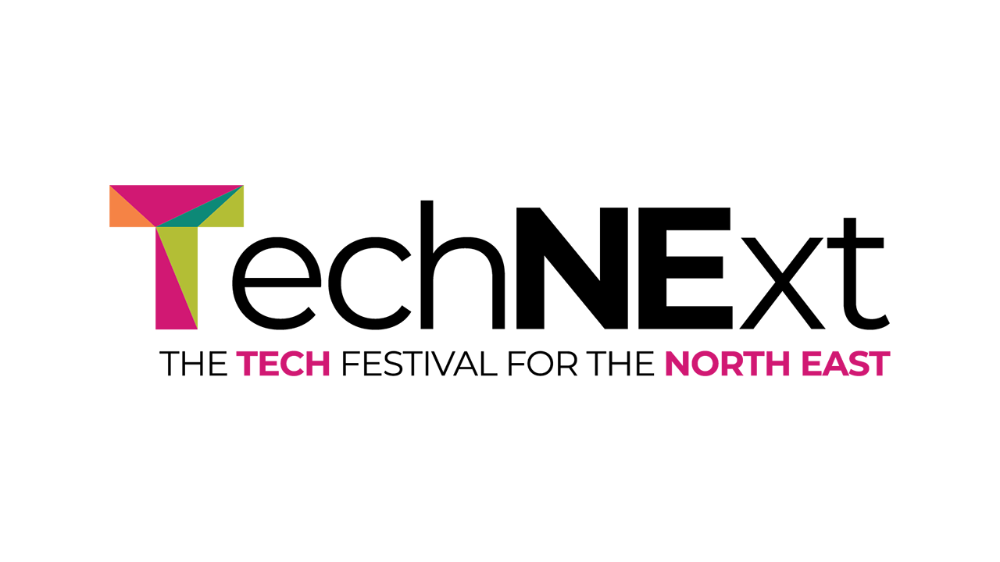

TechNExt 2026 - Data and AI Hub

Welcome - Barry Hodgeson
TechNExt 2026 Data and AI Hub kicked off on the 18th June 2026 at the at NICD, The Catalyst, Newcastle upon Tyne. No agents, no bias, just real humans in the loop. They love linked in messages and good ones mind you, talking about the Data and AI Hub at TechNext 2026 in the Catalyst building and Scrum Connect are supporting the event and have been doing some incredible things with AI and get things production and in places, and now think what a time to be alive with agentic AI and hear about all the learning and how to amplify, share and collaborate.
Barry Hodgeson welcomed everyone to the Data and AI hub and is great to see everyone here, this building exists to see exactly what is happening here, taking data and making better decisions and no better way to spend talking about data and AI. This is the National Innovation Centre for Data and is built on data science and been here for more than a decade and work on business problems and data scientists don't work in isolation and make sure people and company have what they need and have delivered over 170 projects and NICD projects will attract more high skilled jobs and money to the local economy which is the spirit of today. Where today sits is one of the four hubs that make up TechNExt and across the festival today is their day and will hear from industry leaders in the area, also hear about how you can build AI responsibly and more. Talk to each other, swap notes and find the people you want to talk to.
Gen Tech in Practice: AI Governance and Adoption Lessons from Gentoo - Micheal McCarrol Gentoo & Andy Bremner
Andy Bremner works for Access Trainer and looks at digital tools and how systems operate and been having conversations with Micheal from Gentoo and have realised a governance approach is the way forward, while they designed the AI apprenticeship there would need to be some kind of governance needed. Micheal works with Gentoo which is a housing association based out of Sunderland, and they have been around a little bit and for AI they are doing a PhD at University of Sunderland around AI. Michael was challenged about how to make Gentoo more productive and answer was to implement AI, without fully understanding what AI is, they needed to get a high level overview about what definition of AI, AI is the science and engineering of making machines smarter with machine learning and generative AI for agents and robots we know and love.
Why AI matters to risk and governance? AI to risk and governance matters, it allows them to accelerate their business as they are a regulated business and have reputational risks, what if they unleash their data and someone elsewhere finds out about Gentoo. Can they use AI was first question, which was that everyone already is. Andy asked how do you balance use of AI, Micheal answered if don't manage things in a controlled way may end up with those headlines like bad cases where it caused more problems for poorest in society so they thought about how to do it properly but how do they make sure things are responsible, also around the £1 billion AI startup going bust which was a lot of low paid workers pretending to be bots.
AI supports people, not replace them, AI is heralding a fourth industrial revolution, colleagues may feel apprehensive or ill-equipped to navigate this shift, the AI assisted human where it is a tool to help in daily job. Hype driven adoption where people feel AI will make things magically better, need to adopt tech with foundations in place so worked with Microsoft and partners to deliver message from industry experts and had specified delivery window of twelve weeks. Why start with governance, AI changes risk before it delivers value, control must precede capability, clear accountability is essential and approved tools reduce uncertainty and governance enables confidence to experiment and is key to keep people in the look and maintain accountability, you're the expert in the room, their colleagues are the experts and was key they don't allow it to make decisions so can't blame Copilot for making a dodgy decision and any decision has an outcome against a person so a decision needs to be made by a human but AI can help people make a decision. Micheal mentioned they stood up an AI governance board for an oversight of AI use, with governance as a foundation.
Andy asked how to you balance groups and have heard that some tools are not as good as others, but need to use the right tools and avoid the news of a GDPR breach, the foundations of their strategy started with policy and governance base layer and once had this in place which was done pretty quickly and then had AI for productivity and then looked at AI and data, they have a lot of data in a lot of systems, then looked at embedded AI and looked at existing tools and what can be provided to hook this together and then looked at IoT, then they could look at custom AI but don't have access to skills and specialism to do this. They have policy guardrails which is putting people first and concept of AI-assisted human, humans lead the conversation and AI supports providing insights, speeding up tasks and help make better decisions. They found their colleagues who were neurodivergent to excel in their job with the help of AI tools. Micheal mentioned found AI tools help them and asked if Andy found this did help and people were able to get more done. Micheal mentioned it turned from data entry to data validation talking tasks that took hours into minutes. Andy mentioned making the safest path the easiest so allowed certain tools and blocked everything else which is how you can find where people are trying to put data where it shouldn't, educate people and monitor usage on safety point of view and make sure has a return of investment and make sure costs don't go too high, they started with a pilot of 110 and found 10% weren't using tools to full potential so reallocated those resources.
Michael mentioned they had pilot as a form of risk control, familiarise staff with principals of AI, they spoke to Microsoft to get help in that direction. Data foundations were AI amplified risk, clear ownership is essential and poor data would mean poor outcomes, strong data governance enables safe AI, they are please they went through the exercise and found policies with multiple versions which could be seen by agents, asked Copilot if you can paint a shed pink with polkadots and it said yes as residents can only use muted tones. Governance enabled at Gentoo resulted in single ownership and clear decision rights, controlled Copilot adoption with restricted and approved tools. After twelve weeks they had made progress with regard to productivity improvements with over £44,000 return on investment along with they delivered readiness, business value assessments and found collaborative ways of working and engaging with people.
Michael mentioned lessons learned was AI governance needs to be visible, enforceable and embedded in day-to-day controls, time-bound pilots are an effective risk containment and assurance, human accountability must be explicit for all AI influence decisions and weak data quality and data classification increased decision risk and sustainable value comes from evidenced controls not trust in technology. Andy mentioned there is discovery time and making sure rules are correct, did they find this approach reduce silos in work? Micheal mentioned parts of business worked together for the first time, it brought people together and shared skills and they brought together a centre of excellence, that they had not foreseen coming about. Andy mentioned people uses tools a little differently and it is fascinating to see what someone has done with these tools that hadn't thought about to improve productivity for others. Micheal mentioned they have to do a lot of translation services, without needing to go through a third party. Andy mentioned there is a human approach that you don't want to lose which has to increase with teamwork to use these tools to the greatest effect. Micheal mentioned that heard AI will take all of our jobs, but AI will take jobs and society will collapse but truth is somewhere in the middle and people who work with people will be more prominent, technology is moving forward, people want to take advantage as it would make their job easier, the AI assisted human is giving a tool to support people and not replace them and need that person there to do the right thing.
Beyond the black box: the challenge of delivering AI you can trust - Hilary Duffy
Many organisations don't trust AI and Sage are working to provide AI with security and transparency people can trust for control and accountably. Sage is market leader for accounting, payroll and payment systems and were founded in 1981 with 45 years of experience and have 11,000 colleagues around the world and 2,000 in Newcastle, they have 17 patents in AI including 6 in generative AI. Sage in the North East is a British success story and are an active participant in regional economy and held an event yesterday engaging local businesses and want to empower local people to reach their full potential.
Sage AI, Hilary joined Sage to work with AI and have worked with this before and IoT and wanted to be part of this mission, it was launched back in 2018 as an R&D organisation but now an expert group and have delivered solutions like outlier detection and Sage Copilot and were first in their market to launch a productivity assistant to get answers and insights with AI used across 14 of their products.
AI, agentic AI and agents. Agents can understand the goal, break down into strops and tailor or guide actions and explain reasoning, they need strong foundation to create an effective agentic AI system. Why have they invested in AI, it allows people to have a higher impact on business not speed but shape, don't have to spend time pulling data together but evaluate and help reduce problems and highlight anomalies and people can engage with date more easily and naturally.
Their AI is not third-party it is very much their own AI and accounting specific to deliver productivity and saving hundreds and thousands of pounds annually and provides over 75 million insights, every day their AI models are training on vendor data and support multiple languages. With AI are at start of a new industrial revolution and this is a moment of transformation of AI in finance so their AI strategy is evolving and allow agents to take agents to take action on a user's behalf for agents that think ahead and act fast and have technology to link everything together so CFO can go from supporting a business to leading a business.
AI can be where forward looking insights can be delivered on demand, possibilities are endless and allow finance to get out of being doers to reviewers, as move towards autonomous AI era and this approach can drive outcomes and direct towards a goal and is self assenblying and users remain in control, see exponential gains in autonomy and reduced orchestration. High-performance finance leaders rely on AI with most saying it underpins their finance processes, expect to increase use, implementing AI is critical to remain competitive and will help with job satisfaction. Customers are being saved thousands of hours by using automation agents, doubling productivity.
Trusting AI and why this matters, AI adoption and productivity gains are limited by lack of trust, trust is a big issue and 70% of finance leaders reject AI outputs they cannot explain and finance professionals spend hours reconstructing, validating and defending AI outputs so much of time savings are lost to verification, explanation and reconstruction work. What is AI can you trust in Sage products, help customers to have impact on their products, they can have explainable and verifiable confidence to see the logic followed with control with human approval of consequential actions and guardrails set for specific workflows, everything starts with trust and need accountability which is transparent and auditable including what happened and how approved it, building a system that finance teams can rely on.
Accountants need confidence in results, so need answers that are explainable with links to sources and agents respect permissions, policies and controls and finance teams need to ensure accountability, they build AI responsibly so it works in best interest for customer and adhere to global compliance frameworks and security standards and customers can see the responsible AI standards as they want to be in control and their data is safe and that AI will work for them and be accurate. Accounting domain expertise in action is they have Sage Arbiter where every single prompt is filtered to block jailbreak attacks, prompt injection and for things being returned along with toxicity detection along with guardrails or understanding of terms that are domain specific. Sage Agent Operating System has skills, governance and orchestration and can use models they have trained and built themselves so need domain expertise but need to equip agents than can do things that are needed across first-party and third-party agents which matters more from single experience within one project to multi-agent ecosystem where will see multiple agents working from same data.
Finance intelligence agent can give users ability to ask natural language questions of their financial data and help finance teams get to data and make decisions faster, it also provides nice graphs and values to provide a deeper understanding to give greater confidence and speed to teams while retaining accountability. User could ask how many outstanding bills they have and can get a list but also deeper insights along with being able to see how Sage Copilot worked it out. On the roadmap is ability to get proactive insights and collaborate where finance leader can get information and get to root cause of a problem and have ability to collaborate in the product with colleagues and get that insight. Build a workspace in natural language allows users to tailor a workspace to your specific role, role specific workspace could be useful non-finance users such as other leaders in the business to show the information needed, which can be incredibly valuable. Create rules in natural language, in this case a finance controller can receive a text about an anomaly and may be low value invoices so could ask the system to create a low value rule that can then approve these as needed.
The trillion dollar bottleneck: Using AI to modernise the code that runs the world - Rich Stokoe
There are systems running things all around the world that use legacy tech and until now it has been risky to take these and modernise these. Rich Stokoe has been building software since 1998 and started coding in 1989 and worked for a few different companies locally and now ThoughtWorks, they have over 10,000 people globally and are the leader in modern application development and their non-London HQ is in Grey Street, they have been there for eight months and joined from client side and hadn't been a consultant before and when looking for a role they gave it a go, but now there, the books and blos are only about the 20% of ideas mature enough to publish including self-healing AI operations that identify issues with unhealthy systems and fix those issues proactively.
Typically, enterprises have difficult to change systems with minimal process automation, no test environments, limited observably, out of date business processes and other issues with as logic and data entangled. Batch processing means can't have real-time data if have legacy system at the heart of your business. They will do event storming and capability meetings, and this can take 6 to 9 months or even years in some cases and now with AI can make this faster and more automated with their AI works agentic development platform. They have code concise which takes business requitement documents, Jira tickets and give this to a fleet of agents that know many programming languages and can handle product requirement documentations and pass this to agents to implement this.
With AI works platform you can download a codebase, which may use Cobol and then can see a structure of the file itself in a graph on how the files interact and also have a full technical and business analysis of the code, you can see the dependencies, what data retrieval, and more using the whole knowledge graph of the system to see what critical risk and change risks such as taking bad coding practices from the past and not taking this into the new system. If you don't know where a file is you can ask this in natural language which will when come back with information you need, which could be for customer support to fix a bug or can be used to do technical due diligence of a codebase that is going to be acquired. Can get a capability map from the knowledge graph gathered by the agents and can get business requirement documents, not just derived from codebase but also have built a context library from their knowledge from over 35 years and worked with an automotive firm about making sure emissions are calculated correctly was needed and didn't exist in the old system and could be built into the capability graph.
You can get a domain driven design understanding of the code base on where have aggregates, policies and events, such as being able to see how a transaction is handled in the codebase and get a programming language agnostic view and can ask to build something in a modern programming language like Java or .NET. One of the problems with legacy systems can be a ball of mud which is impenetrable so may not want to go with a big bang but find small slices you can carve off, so if can see isolated features in the domain model those would be the ones you could do this with. Then can look at the bounded context for the parts of the application and then find out which part of the team would do this, it can see who the bounded context should be and can then validate this with a subject matter expert. May has loose coupling throughout the system that can be sliced and diced to go from an impenetrable codebase and bring that forward.
Getting to something you can build and maintain is the tricky part, real world delivery outcomes included working with an Automotive firm where too 60,000 person days from the mainframe modernisation, or another where reduced comprehension lag for a user story from 10 days to 10 minutes as can just pull the user story out. You can go from specifications in existing code and then get to a modern cloud-native and probably microservice based system that brings all of the functionality but without the legacy ways of working or programming the software. They have detailed enrichment of the specification and then pull in subject matter experts to adapt and enhance specs and the distilled knowledge from them will help understand what does and doesn't at scale in enterprise.
They also have a library of certain requirements with certain specification such as connecting with gambling company to connect with gambling registry so could identify this not being part of the spec and make sure it is included. They also have a component library which gets pulled into the super spec from functional and non-functional spec that can then be feed into the fleet of agents, the code will be build as well architected micro sources then fed to agents that will deploy and monitor logs and passed on to a human if it fails to see why it has failed. The control plain is making sure models are working as expected and outputs are as expected, by using telemetry and observability and monitor prompts and see what were successful and not successful and can look at these prompts and not repeat prompts that have failed in the past and control plain is something they are investing heavily in. They work on frontier models from Microsoft, OpenAI and others and seeing a lot of value and proven work in production.